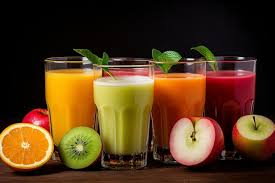

Fruit Juice

-
Carbohydrate Content: Fruit juices, even unsweetened, are high in
carbs, with 20-30 grams per 8-ounce serving, mostly from natural sugars.
-
Net Carbs: Unlike whole fruit, juices lack fiber, making their
net carb count equal to total carbs and potentially leading to a quicker
spike in blood sugar.